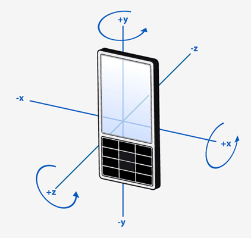

QGyroscopeReading Class
The QGyroscopeReading class represents one reading from the gyroscope sensor. More...
| Header: | #include <QGyroscopeReading> |
| qmake: | QT += sensors |
| Since: | Qt 5.1 |
| Inherits: | QSensorReading |
This class was introduced in Qt 5.1.
Properties
Public Functions
| void | setX(qreal x) |
| void | setY(qreal y) |
| void | setZ(qreal z) |
| qreal | x() const |
| qreal | y() const |
| qreal | z() const |
Detailed Description
QGyroscopeReading Units
The reading contains 3 values, measured in degrees per second that define the movement of the device around the x, y and z axes. Unlike QRotationReading, the values represent the current angular velocity rather than a fixed rotation. The measurements are in degrees per second.

Property Documentation
x : const qreal
This property holds the angular velocity around the x axis.
Measured as degrees per second.
Access functions:
| qreal | x() const |
See also QGyroscopeReading Units.
y : const qreal
This property holds the angular velocity around the y axis.
Measured as degrees per second.
Access functions:
| qreal | y() const |
See also QGyroscopeReading Units.
z : const qreal
This property holds the angular velocity around the z axis.
Measured as degrees per second.
Access functions:
| qreal | z() const |
See also QGyroscopeReading Units.
Member Function Documentation
void QGyroscopeReading::setX(qreal x)
Sets the angular velocity around the x axis to x.
See also x().
void QGyroscopeReading::setY(qreal y)
Sets the angular velocity around the y axis to y.
See also y().
void QGyroscopeReading::setZ(qreal z)
Sets the angular velocity around the z axis to z.
See also z().